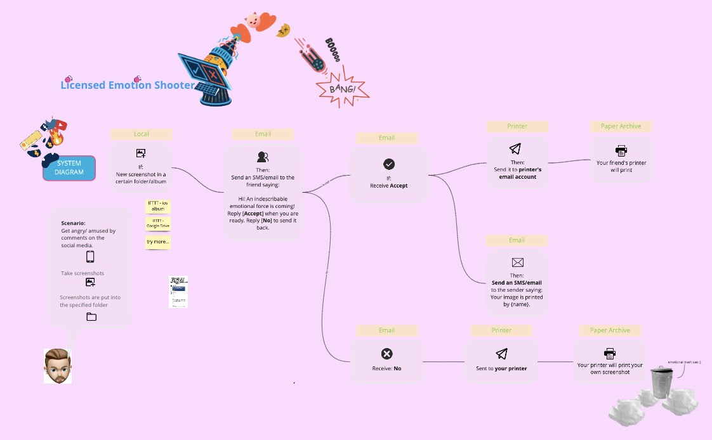
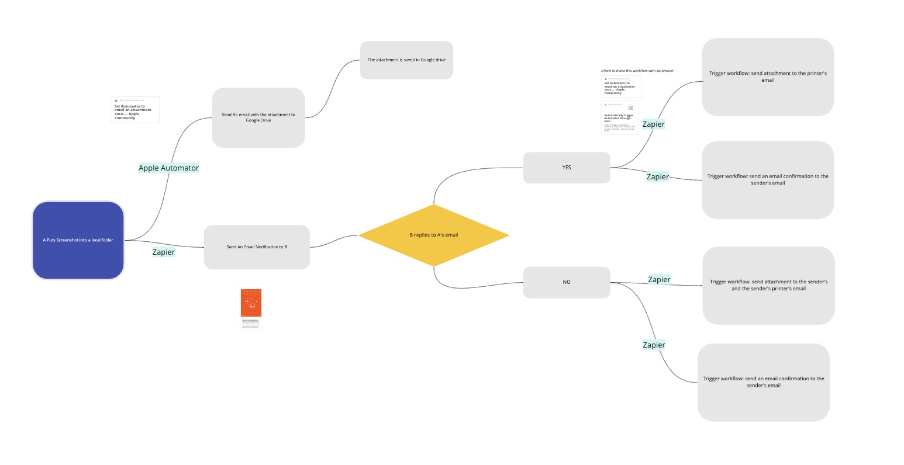

This project is about emotional venting, using the characteristics of IFTTT. When users encounter unhappy things, they can immediately get comfort from friends, or digest these emotions by themselves.

This week we focus on breanstroming on what IFTTT can do and idea collect
First we brainstormed what interesting reactions and sources the Iftt technology can achieve. At the same time, idea collection was carried out, and finally we drew a simple diagram
User scenario: When a user browses to a message worth sharing, it will be sent to friends immediately via email. When a friend receives an e-mail, he will give feedback in two ways: "agree" or "disagree".
If you agree, the picture will be printed on your friend's printer. If you disagree, the picture will be printed on your printer. In this time of social distancing, this is a new way of communication and interaction.
Final Output of Diagram
This is video we made for it
This is a link